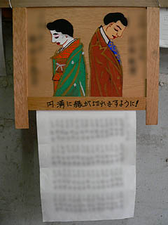
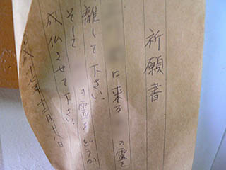

野芥縁切地蔵尊/福岡県福岡市
福岡市早良区の野芥（のけ）。
最近は地下鉄が開通したりしてすっかり便利になったようだが、そんな街の一画に小さな地蔵堂がある。
見たところ何の変哲もない小さなお堂だが、そんな小さなお堂の中には人々の切実なお願いが濃縮されている。
その名は野芥縁切地蔵尊。
その名の通り、縁切りに御利益のあるお地蔵さんだ。
かつては於古能地蔵と呼ばれていたそうな。
このお地蔵さんの由来は今をさかのぼること千三百年前・・・
・・・和銅年間の事、土地の長者、富永兼縄とお古能姫の縁談がまとまり、今日はその目出たき輿入れの日。
ところが新郎兼縄、何を思ったか出奔。逃げ出してしまったのである。
何せ千三百年前のハナシゆえ真相は定かではないが、まあ、昼ドラチックに考えれば前日に偶然元カノに遭遇。で、「やっぱりお前と添い遂げたかバィ〜」と手に手をとって駆け落ち。奈良あたりで長浜ラーメン屋を経営して「自分らしい」生き方を貫いた・・・りしたんでしょうか？
困ったのは新郎パパの照兼。輿入れ当日に息子が逃げたとあっては新婦に顔向け出来ない。
そこでパパ照兼「息子兼縄は急に死んでしもた！」とかなり苦しい言い訳。
使いをお古能姫の元に出し、知らせを聞いたのがここ、野芥の地。
今時のドラマなら「ぬあるろ〜〜〜、ふざけんぢゃあねえぞおおおお〜〜〜」と刃物を振り回し、たわしコロッケをつくり、財布ステーキもつくり、さらに草履カツまでつくったり・・・あ、昼ドラ見過ぎですか、そういえば5寸クギパンも凄かったですねえ・・・まあ、そんな展開になだれ込みそうなものだが、お古能姫は「早や嫁ぐべき家も無し」と自らの命を断ってしまったそうな。
あまりにも悲惨なハナシに土地の人々が哀れんで「男女の仲で苦しまないように」と供養の為にお地蔵さんを建てたのが野芥縁切地蔵尊の始まりなのである。
で、そんな男女の縁切りに御利益のあるお地蔵さん。
カケラを相手に飲ませると悪縁が切れるとされていたので、お地蔵さんは見る影もない。単なる石の塊と化している。
昭和60年に全焼したため翌年建て直された地蔵堂。保存会の方々が管理されているそうだ。
そしてお地蔵さん（のカタチをしていたであろう）の石像を囲むように多くの封筒や絵馬がかけられていた。
絵馬は背中合わせの男女が描かれている。
まあ、これ以上ないという位分かりやすい図像。
絵馬の絵は皆同じ人物によって描かれたものだろう。男性は青ネクタイに茶のスーツ。女性は着物だったりブラウスだったりと何種類かのバリエーションがある。
これは男性よりも女性のほうが多く祈願に訪れる、という事なのだろうか？
互いに背を向け俯く二人。何ともやり切れない想いがビシビシ伝わって来て、見ているこちらも思わず「ハァ〜」とため息。
これほど、文字通り「後ろ向き」な絵馬は初めて見ました。
でもこれもまた生きていくための方策。皆さん、前向きに頑張って下さいね。
絵馬よりもはるかに多い数の封筒。中には様々な悩みを持った人達の縁切祈願の願い事が詰まっているのだろう。
気になるのは同じ筆跡の封筒が何枚も。
・・・同じ人が何度も縁切祈願に来てるのかぁ・・・
中には封筒に入れずに直にお願い事を書き付けた紙も貼られている。
奉納した方々の個人名は伏せさせてもらうが、どれも鬼気迫るものがある。
何度も「えんきり」と書かれた余白には小さな字で「二人のせき（籍の事か）が切れますように」と書き込まれている。
ノートを引きちぎって書かれた奉納文。余程切羽詰まっていたのだろうか。心中お察しします。
元々男女の縁切祈願のお地蔵さんだったが、「縁切」というコトバを拡大解釈するのは民間信仰の常套手段。様々なモノとの縁切が祈願されている。
ギャンブルや病気との縁切も切実な祈願のひとつ。早くよくなるといいですね。
中には御丁寧に絵馬と紙の両方で祈願している切実なケースもある。

「○○に来る××の霊を離して下さい。そして××の霊をどうか成仏させて下さい。」
一見ギョっとする祈願書だが、取り付かれた本人の救済だけでなく、取り付いた霊の救済まで祈願する祈願者の心根に泣けてくる。

これらの願い事を見ると決して古典的、普遍的な男女の悩みばかりでない事が判る。
それは複雑化、多様化した現代の社会をネガティブに照射するモニターとして捉える事が出来る・・・ような気がします。
それともうひとつ。何故このように願い事を書いた紙をわざわざ人目に付く所に貼り付けるのか。
本来であれば、人知れずひっそりと祈願しそうなものだが、ここまで明け透けに奉納するのは何か訳があるに違いない。
それは当然地蔵菩薩に願いを聞き届けさせる、という意味合いと同時に、男女の縁で悩んでここに来る人達に「同じ悩みを持っている人が他にもこんなにいるんだぞ！！」と知らせているように思えてならない。
私には神様仏様がこの願いを聞き入れてくれるのかどうかは判らない。しかし少なくとも同じ悩みを持つ人達同士が連帯感を持つ事でお互いを癒すという構図がそこにはあるように思える。
悩みごとをお互いに告白する集団セラピーのような機能がこの地蔵尊にはあった、いや、今でもあるのではなかろうか。
してみるとここの縁切地蔵だけでなく、祈願のために何かを奉納するという習俗全体が、実は神仏に救いを求める、という意味合いとは別に、そういう側面をもっているのかも知れない。
奉納の習俗、ひいては信仰の本質って案外そんな所にあるのかもしれないですね。
2006.4.
珍寺大道場 HOME